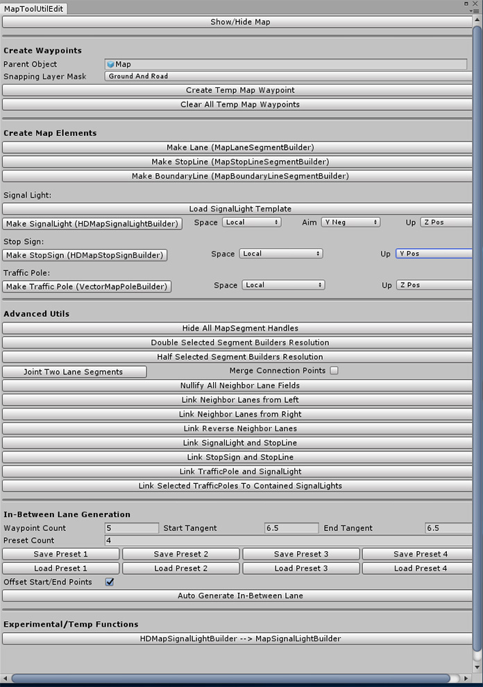
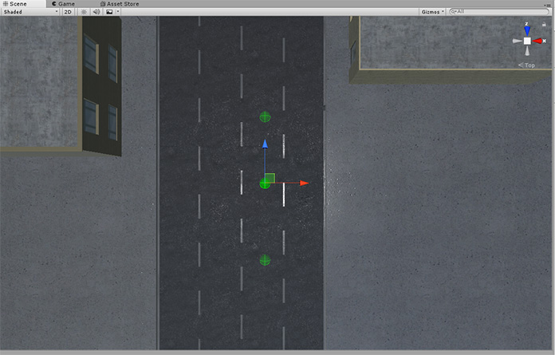
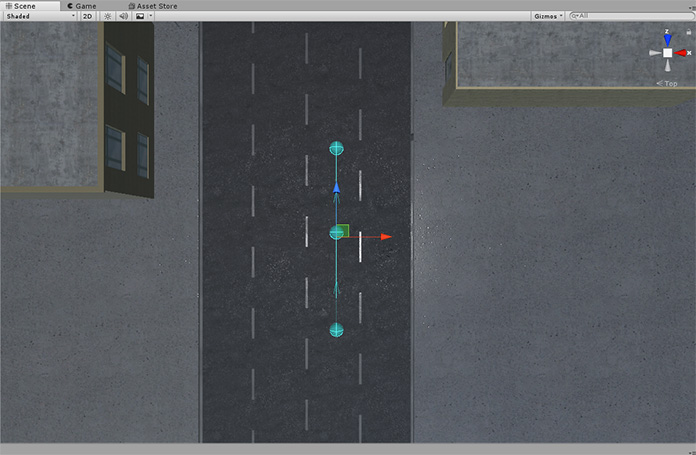

Map Annotation
The LGSVL Simulator supports creating, editing, and exporting of HD/vector maps of existing 3D environments (Unity scenes). The maps can be saved in the currently supported Apollo or Autoware formats.
Currently, map annotation is only supported while running the simulator as a Unity project in a Windows environment.
Creating a new map
- Open
MapToolUtilEditinUnity:Window->Map Tool Panel
{kind=link}
- By default, map annotation is not shown. Click
Show/Hide Mapto show existing map annotation. - Before annotation, select correct
Parent Objectin MapToolUtilEdit, for exampleMap. Then every new object you create will be underMapobject.

- After annotation is done, remember to save: go to Map level, click Apply
{kind=link}
Annotate Lanes
Create temp map waypoint
- Maker sure your roads belong to the layer of
Ground and Roadsince waypoint will be only created on this layer. - Click
Create Temp Map Waypointbutton to create a new point in the center of current scene window.

Make Lane
- Select the waypoint,
ctrl+dto duplicate and move them to desired positions

- Connect them to make a lane
- Sequentially select points
- Click Make Lane (MapLaneSegmentBuilder) button to make a lane
{kind=link}

- You can make StopLine and BoundaryLine in a similar way by using the other two buttons below Make Lane (MapLaneSegmentBuilder)
{kind=link}
{kind=link}
- In-Between Lane Generation
- You can make lanes by creating temp points and connecting them, and you can also make an in-between lane easily when you have two existing lanes and want to make another lane to connect them together
- Select both lanes, create the new in-between lane by clicking
Auto Generate In-Between Lanebutton at the bottom of MapToolUtilEdit panel
{kind=link}
- Because you might want to connect lanes of different angles and do it multiple times, we provide the ability of saving different presets to generate in-between lanes.
- Larger value of
Tangentmakes the lane more straight - You can also change the number of presets by changing
Preset Count - Check
Offset Start/End Pointsif you want a small offset between the end points of the new lane and the end point of the selected two lanes, otherwise those points will overlap with each other completely.
- Larger value of
Link neighbor lanes
- After you create parallel lanes, you need to link them to have correct relations
- Link neighbor lanes of same direction
- Select lanes sequentially from left/right
- Click
Link Neighbor Lanes from Left/Rightto link them - After linking, you can check it in every lane object's inspector
{kind=link}
- Link reverse neighbor lanes
- Select both reverse neighbor lanes
- Click
Link Reverse Neighbor Lanes
{kind=link}
-
In the above screenshot, double yellow boundary lane can be generated by creating BoundaryLine and changing its
Line TypefromSOLID_WHITEtoDOUBLE_YELLOWin its inspector -
If anything goes wrong, you can nullify all neighbor lane fields by clicking
Nullify All Neighbor Lane Fieldsbutton
Set correct left/right boundary type
- The rightmost lane typically has a right boundary type of
CURB
{kind=link}
- Middle lanes typically have a left boundary type of
DOUBLE_YELLOW
{kind=link}
Traffic light annotation
- Make SignalLight
- Select
localinstead ofglobalin both Unity and MapToolUtilEdit panel - Find one traffic light that is already made whose type is
HDMapSignalLight(with a red boundary box) - Load template by clicking
Load SignalLight Templatebutton
{kind=link}
- In the above screenshot, the left SignalLight (type: HDMapSignalLight) has a red boundary box and the right one (type: MapSignalLight) doesn't have it
- Make sure relative axis relations are selected correctly
- In the row of
Make SignalLight(HDMapSignalLightBuilder), selectAimasY Neg,UpasZ Pos
- In the row of
{kind=link}
- Select your desired empty signal light holder
{kind=link}
- Click
Make SignalLight (HDMapSignalLightBuilder)to generate the signal light
{kind=link}
- Note: currently,
HDMapSignalLightBuilderis for Apollo; one per road is enough.MapSignalLightBuilderis for Autoware, which needs one for every lane. There is a converter button at the bottom ofMapToolUtilEditto getMapSignalLightBuilderfromHDMapSignalLightBuilder - Link the created traffic light to the corresponding stopline
- Select both signallight and the stopline
- Click
Link SignalLight and StopLineinAdvanced Utilssection in the panel
{kind=link}
- Similarly, you can create stop sign and link the stop sign to the corresponding stopline using corresponding buttons.
Create traffic pole and link to contained signal light (additional step for Autoware)
- Select desired traffic pole
- Make sure
LocalandZ Posare selected - Click
Make Traffic Pole (VectorMapPoleBuilder)
{kind=link}
-
Press
wso you can rotate the created pole. -
Rotate the bounding box of the pole to include corresponding signal lights in it
{kind=link}
- Click
Link to Contained SignalLightsin the traffic pole's inspector - OR select both signal lights and traffic pole, click
Link TrafficPole and SignalLightin the MapToolUtilEdit panel - For traffic poles in multiple intersections, to save time you can
- Create and rotate for all
VectorMapPoles - Select all
VectorMapPoleinHierarchytab ->Link Selected TrafficPoles To Contained SignalLights -
Notes for stopline
-
For Autoware, there needs to be two waypoints for every lane, i.e. five waypoints are needed for four lanes, three waypoints are needed for two lanes, etc. Apollo does not have such a requirement.
Export map files
- For Apollo, select
HDMapToolinHierachytab, clickExport HD Map
{kind=link}
- If your map annotation is correct, you will see
Successfully generated and exported Apollo HD Map!in the Console - You can find the generated map file in
hd_mapfolder under the root of the repo - It is similar for Autoware: select
VectorMapTool, then clickExport Vector Map